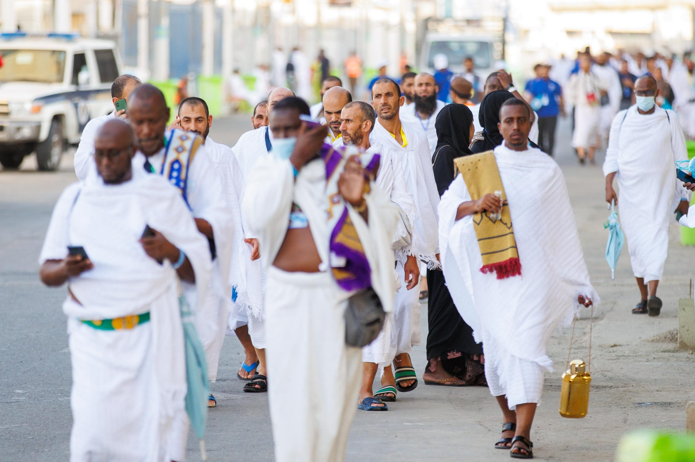

الحَجّ
الحجُّ لغةً: القصدُ. واصطلاحاً: قصدُ البيتِ الحرامِ لأداءِ مناسكَ مخصوصة، في زمنٍ مخصوص، على صفةٍ مخصوصة.
وهو الركنُ الخامسُ من أركان الإسلام، فرضَهُ الله تعالى على المستطيع مرةً في العُمُر.
«بُنِيَ الإسلامُ على خمسٍ، وذكرَ منها حجُّ البيت»
متفق عليه